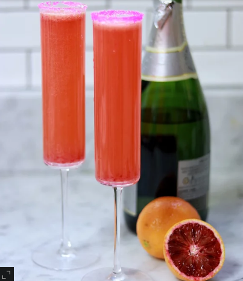

Blood Orange Mimosas

Great blood orange-pineapple Mimosas for any lazy morning.
Ingredients:
½ cup pink sanding sugar, or as needed
1 (750 milliliter) bottle brut Champagne
2 fluid ounces orange liqueur (such as Grand Marnier)
Steps:
Step 1.
Dip the rims of 4 champagne flutes in water. Dip into sanding sugar to coat the rims.
Step 2.
Divide Champagne among the flutes. Pour 2 tablespoons pineapple juice and 2 tablespoons blood orange juice into each. Top mimosas with orange liqueur.
Programmer's Note: This recipe is not mine. This recipe is a recreation of the recipe provided at this page and serves only as practice text for personal programming purposes.